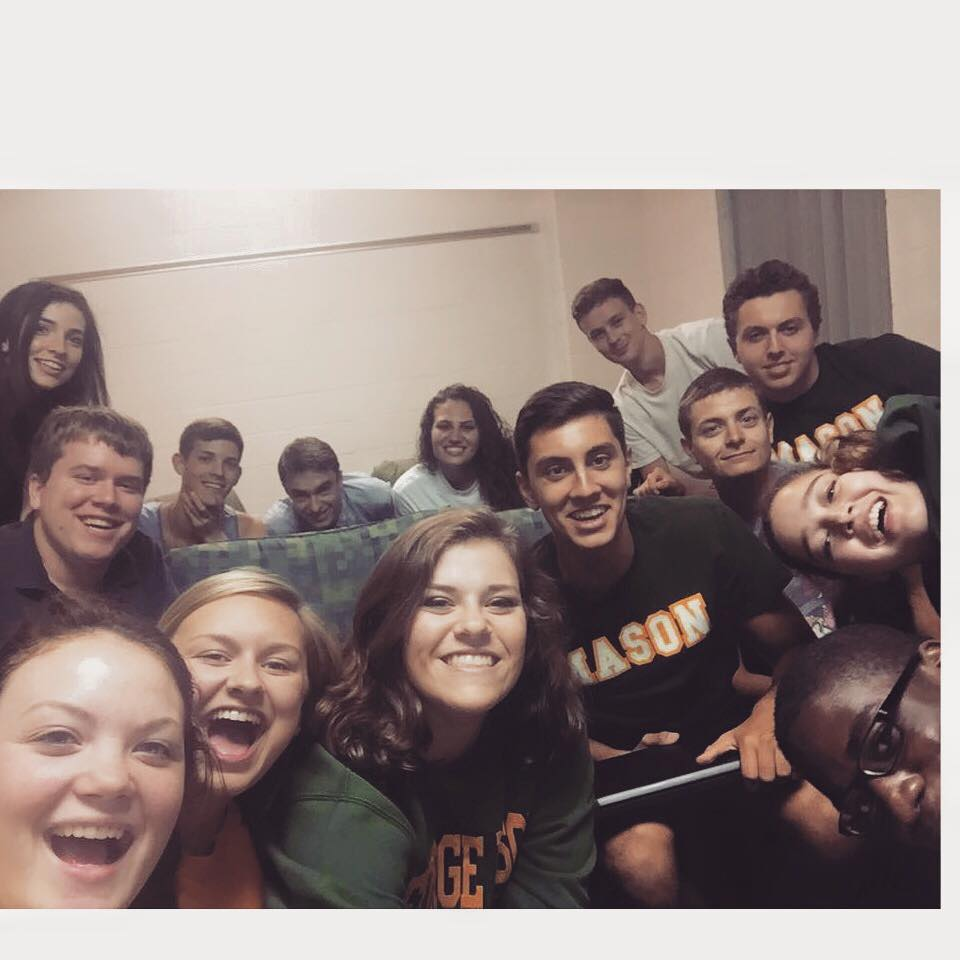
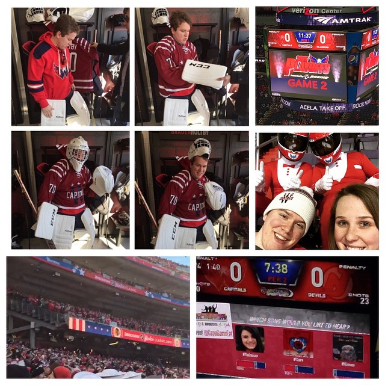
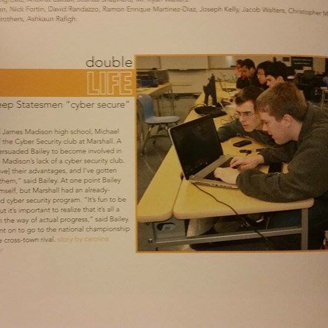

Ideally in this page I'd like to describe some of my more personal attention areas in life, potentially providing context as to how my professional career was formed and how I spend free time.
City
My family recently moved (once I graduated HS) from Vienna, VA to Old Town Alexandria, VA. For those unfamiliar, this is effectively on the DMV (DC, MD, VA) border. This is also where I met an IT contracting company NanoTech Computers run by Fernando Torres.
I'm a huge DC person, consistently metro'ing into the city, so I welcomed this change. I've been to most attractions in DC, been to and regularly go to most sports teams in DC, and go to concerts (and in the future definitely clubs) in DC. I checked a number of entertainment spots and landmarks off the list around Alexandria and DC with my girlfriend. My girlfriend lives outside Philadelphia in South Jersey so I've found myself in and around Philly quite a lot. I live on Queen street so find myself downtown quite a lot. If you're on N Washington or King at any point you might run into me. I should note I do live in Fairfax during the semester.

College
My college experience was pretty typical and pretty ideal. I made friends pretty immediately on my floor "Harrison 2" (stylized amongst my friends as H2). I still communicate and hang with the vast majority of them, with some of them falling out of the group for pretty typical reasons spanning from criminal trouble to being preoccupied greek life.
A mutual friend on Harrison 2 is how I met my long-time girlfriend. She came to stay for a weekend on our floor. I lived on campus for years with Paul Benoit and am looking to move off campus now. We also jointly run Mason CC. I'm "president" and he's "co-president", effectively a President-VP dynamic. On paper according to GMU, I'm solely in charge of the organization, fill out all the paperwork, coordinate sponsors, and more. Paul largely handles content and helps with duties that slip through such as advertising and outreach, similar to how a VP would find tasking. We also both work at Crypsis together and have developed increasingly similar skillsets over time.
Socially, I also had a good college experience routinely visiting Penn State to see my girlfriend. I attended their football games, went to their parties, and made mutual friends there.

Capitals
One of the most common activities I spend my time doing in DC is attending Capitals games. I am a huge Capitals fan and have been for years. It originated from when my dad worked at (I believe) HP and got box tickets to Capitals back when they had the blue-grey capital logo.
I went to the Winter Classic at Nationals Park (pictured), was lucky enough to meet Craig Laughlin, and attended approximately 20-30 home games that year. The late night start time means it had a low rate of interference with classes or work. Our family has been season ticket holders for a few years now and we rotate off attending games. I've also been to Kettler Iceplex in Ballston where they practice, and I attended a playoff game between the Tampa Bay Lightning and Montreal Canadiens in Florida for the pure enjoyment of hockey.
My favorite player with the Capitals is Evgeny Kuznetsov. I appreciate his passion for the sport, where it's abundantly obvious he appreciates when he does well and doesn't take pride in his work when he does a bad job. It was also fun seeing him transition to the US and reading his story on Player's Tribute from Chelyabinsk.

High School
My first two years of high school were relatively uneventful. Minor grey hat activity and varsity swim team lead to large sums of relatively unconstructive time. Swim and dive was a great time with friends but ultimately conflicted with a cyber club at a rival school I was looking to join after they reached out for a more constructive outlet for my more sketchy activities that became known in the county. I ended up hacking ethically under the nick warhawk_down, which ultimately developed into patriotdown at GMU.
Since then, in my junior year I became a relatively high scoring rookie for the club and was ultimately elected president after one year.After high school, around sophomore to junior year, I transitioned to an entirely white hat mentality. My time at school was ultimately characterized by the decision to play both sides of the local fence and get one rival school in the papers while I took core classes at another. I ultimately spent more time at the school that was rival to the school I wasn't fully enrolled in.